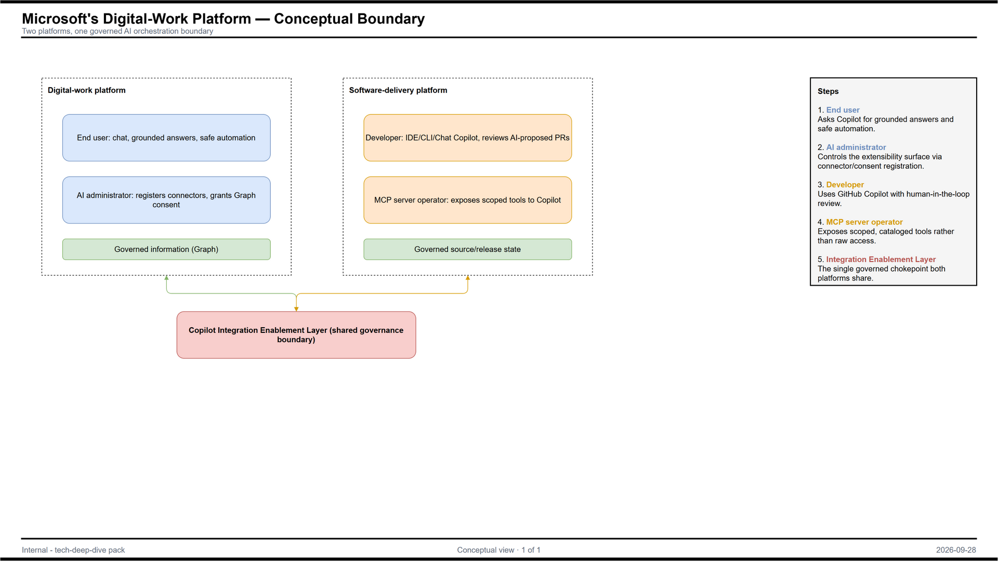

Each diagram as the rendered PNG, the editable draw.io file, and the Mermaid source where one exists. Open .drawio files in draw.io (desktop, or app.diagrams.net).
00-mindmap

01-conceptual-1
PNG · draw.io · Mermaid (.mmd)

Mermaid source
flowchart LR
subgraph Org["Organization boundary"]
U["People and teams"] --> CAP["Microsoft's Digital-Work Platform capabilities"]
CAP --> DATA["Governed information"]
end
EXT["External parties and systems"] <--> CAP
REG["Regulators / auditors"] -.evidence.-> CAP
02-logical-1
PNG · draw.io · Mermaid (.mmd)

Mermaid source
erDiagram
POLICY ||--o{ RULE : contains
RULE }o--o{ DATA_ASSET : "applies to"
DATA_ASSET ||--o{ EVENT : emits
02-logical-2
PNG · draw.io · Mermaid (.mmd)

Mermaid source
flowchart LR SRC["Data sources"] --> DISC["Discover and classify"] DISC --> POL["Policy decision"] POL --> ENF["Enforce"] ENF --> EVT["Events and alerts"] EVT --> INV["Investigate and report"]
02-logical-3

03-physical-1
PNG · draw.io · Mermaid (.mmd)

Mermaid source
flowchart TB
subgraph Cloud["Cloud / tenant boundary"]
SVC["Platform services"]
STORE["Data stores and indexes"]
PORTAL["Admin portal"]
end
subgraph OnPrem["Customer estate"]
AGENT["Agents, scanners, connectors"]
ENDPT["Endpoints"]
end
AGENT --> SVC
ENDPT --> SVC
SVC --> STORE
PORTAL --> SVC
04-integration-ai-1
PNG · draw.io · Mermaid (.mmd)

Mermaid source
flowchart LR
subgraph P["Microsoft's Digital-Work Platform boundary"]
CORE["Microsoft's Digital-Work Platform"]
end
SIEM["SIEM / SOAR"] <--> CORE
ITSM["ITSM / ticketing"] <-- CORE
CLOUDS["Other clouds and SaaS data sources"] --> CORE
ONPREM["On-prem file shares and databases"] --> CORE
GOV["Other governance / privacy tools"] <--> CORE
IDP["Identity provider"] --> CORE
04-integration-ai-2
PNG · draw.io · Mermaid (.mmd)

Mermaid source
flowchart LR
USER["User prompt"] --> AI["AI feature / copilot"]
AI --> GROUND["Grounding data"]
GROUND --> CTRL{"Labels, DLP, access checks"}
CTRL -->|allowed| AI
AI --> RESP["Response"]
AI --> LOG["Audit and interaction logs"]